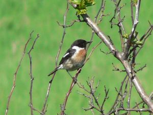

| European Stonechat | |
|---|---|
|  | |
| Conservation status | |
|
Not evaluated (IUCN 3.1)
|
|
| Binomial name | |
| Saxicola rubicola (Linnaeus, 1766) |
|
| Synonyms | |
|
see below |
The European Stonechat Saxicola rubicola (syn. S. torquatus rubicola) is a small passerine bird that was formerly classed as a subspecies of the Common Stonechat. Long considered a member of the thrush family Turdidae, genetic evidence has placed it and its relatives in the Old World flycatcher family Muscicapidae.
It is 11.5–13 cm long and weighs 13–17 g, slightly smaller than the European Robin. Both sexes have distinctively short wings, shorter than those of the more migratory Whinchat and Siberian Stonechat. The summer male has black upperparts, a black head, an orange throat and breast, and a white belly and vent. It also has white half-collar on the sides of its neck, a small white scapular patch on the wings, and a very small white patch on the rump often streaked with black. The female has brown upperparts and head, and no white neck patches, rump or belly, these areas being streaked dark brown on paler brown, the only white being the scapular patch on the wings and even this often being buffy-white.[1]
European Stonechats breed in heathland, coastal dunes and rough grassland with scattered small shrubs and bramble, open gorse, tussocks or heather. They are short-distance migrants or non-migratory, with part of the population (particularly from northeastern parts of the range, where winters are colder) moving south to winter further south in Europe and more widely in north Africa.[1]
The male's song is high and twittering like a Dunnock. Both sexes have a clicking call like stones knocking together.
{kind=link}